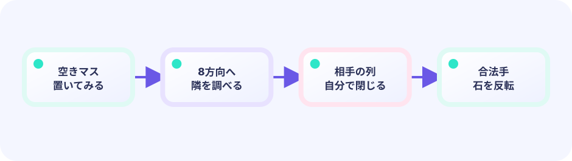

DATA
盤面、手、CPU設定が局面の真実を持つ。
Board / Move / CPU★★★★★ / PLAYABLE
おだやか・位置重視・先読みの3種類のCPUを選び、角が高く角の隣が低い8×8スコアマップで対戦します。
PLAY FIRST
タップ／クリックに加え、矢印キーまたはWASDで黄色いカーソルを動かし、EnterかSpaceで置けます。1・2・3でCPUを選び、RまたはREPLAYで新しい対局を始めます。

DEEP DIVE
各マスに重みを置き、自分の石なら加点、相手の石なら減点します。先読みCPUは、自分の一手のあとに相手が選べる一番よい返し手まで調べます。
盤面、手、CPU設定が局面の真実を持つ。
Board / Move / CPU合法手、反転、パス、ターンを順に決める。
legal → apply → turn盤面と評価を石、印、文字へ写す。
board → pixelsEVALUATION LAB
石を置いて、位置の重みが評価値をどう変えるか見てみましょう。角は高く、角の隣は低く設定されています。
UPDATE と DRAW の境界
キー・タッチを読み、位置・HP・ゲージ・タイマー・盤面を変えます。判定やキュー操作もこちらです。
入力 → ルール → game を更新できあがった game の値を読んで、絵・文字・エフェクトを置きます。game の値は変えません。
game を読む → ピクセルへ投影このページのルールは Update 側（または Update が呼ぶ純粋な関数）へ置き、Draw はその結果を表示するだけにします。
編集する入口
この短い入口が、実際に学習者が開いて変更する Go ファイルです。
// Copyright 2026 Ebi Showcase contributors. Licensed under Apache-2.0.
package main
import "github.com/kumagi/EbiShowcase/internal/reversiui"
func main() { reversiui.Run(reversiui.CPUEvaluation) }仕組みの抜粋
入口が呼ぶ本物の仕組みです。入口と内部を混同せず、両方の場所をたどれます。
// shared pure rules: legal move → captures → apply
captures := Captures(board, player, move)YOUR FIRST RULE
games/tracks/reversi/ebi-reversi/main.go の board / CPU configuration に 評価マップの1マスを変えず別の評価項を1つ足す。`go test ./...` を実行し、ローカルで局面を確認する
FEEDBACK